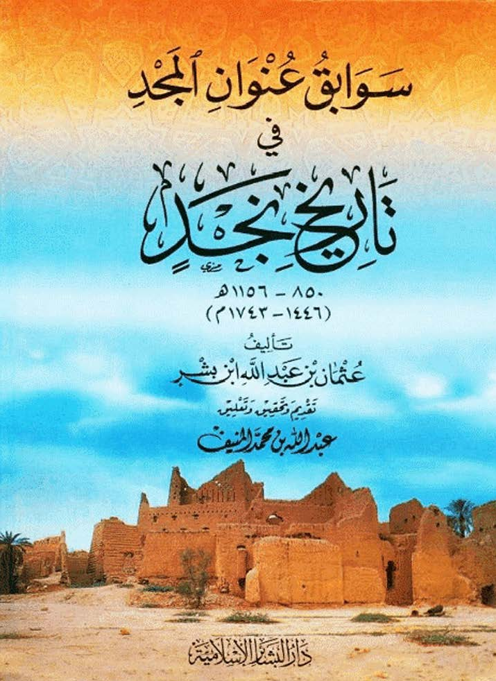
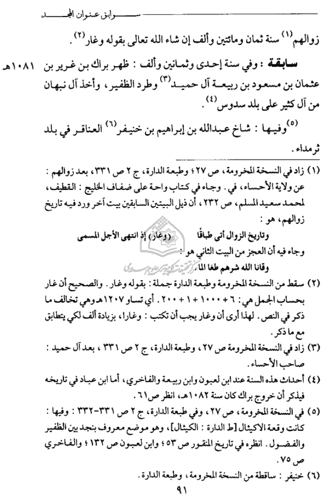

التعريف بالمادة
تتضمن هذه الصفحة نصًا من كتاب سوابق عنوان المجد في تاريخ نجد يذكر مشيخة عبد الله بن إبراهيم بن خنيفر العناقري في بلد ثرمداء، وذلك ضمن أحداث سنة 1081هـ.
النص كما ورد في المصدر
زوالهم سنة ثمان ومائتين وألف إن شاء الله تعالى بقوله وغار.
سابقة: وفي سنة إحدى وثمانين وألف: ظهر براك بن عرير بن عثمان بن مسعود بن ربيعة آل حميد، وطرد الظفير، وأخذ آل زبهان من آل كثير على بلد سدوس.
وفيها: شاخ عبدالله بن إبراهيم بن خنيفر العناقري في بلد ثرمداء.
حواشي الصفحة
(1) زاد في النسخة المخطوطة، ص 27، وطبعة الدارة، ج 2 ص 331، بعد زوالهم: عن ولاية الإحساء، وفي وجاء في كتاب واحة على ضفاف الخليج: القطيف، لمحمد سعيد المسلم، ص 232، أن ذيل البيتين السابقين بيت آخر ورد فيه تاريخ زوالهم، هو:
وتاريخ الزوال أتى طبقًا
(وغار) إذ انتهى الأجل المسمى
وجاء فيه أن العجز من البيت الثاني هو: وأتانا الله شرهم ظلما لله.
(2) سقطت من النسخة المخطوطة وطبعة الدارة جملة: بقوله وغار، والصحيح أن غار بحساب الجمل هي: 6 + 1000 + 1 + 200، أي تساوي 1207هـ وهي تخالف ما ذكر في النص، لهذا أرى أن وغار يجب أن تكتب: وغارًا، بزيادة ألف لكي يطابق مع ما ذكر.
(3) زاد في النسخة المخطوطة، ص 27، وطبعة الدارة، ج 2 ص 331، بعد آل حميد: صاحب الإحساء.
(4) أحداث هذه السنة عند ابن لعبون وابن ربيعة والفاخري، أما ابن عباد في تاريخه فيذكر أن خروج براك كان سنة 1082هـ، انظر ص 61.
(5) في النسخة المخطوطة، ص 27، وفي طبعة الدارة، ج 2 ص 331–332، وفيها: كانت وقعة الاكيال [خط الدارة: الكيال]، وهو موضع معروف يتحدد بين الظفير والمفضول. انظر في تاريخ المقرن ص 53، وابن لعبون ص 132، والفاخري ص 75.
(6) خنيفر: ساقطة من النسخة المخطوطة، وطبعة الدارة.
بيانات المصدر
اسم الكتاب: سوابق عنوان المجد في تاريخ نجد
النطاق الزمني للكتاب: من 850هـ إلى 1156هـ / من 1446م إلى 1743م
المؤلف: عثمان بن عبد الله ابن بشر
تقديم وتحقيق وتعليق: عبد الله بن محمد المنيف
الناشر: دار البشائر الإسلامية
رقم الصفحة: 91
السنة المذكورة في النص: 1081هـ
صورة غلاف المصدر

صورة الصفحة

تعليق توثيقي
أهمية هذا النص أنه يورد اسم عبد الله بن إبراهيم بن خنيفر العناقري في سياق مشيخة ثرمداء، وهو من النصوص التي تساعد في توثيق التسلسل المحلي لأمراء البلدة في القرن الحادي عشر الهجري.
كلمات مفتاحية
عبد الله بن إبراهيم بن خنيفر العناقري، ثرمداء، سوابق عنوان المجد، تاريخ نجد، إمارة ثرمداء، العناقر، سنة 1081هـ، عثمان بن عبد الله ابن بشر.